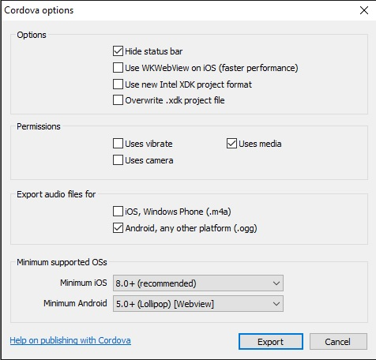
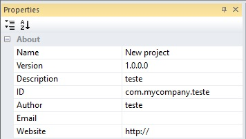

Gerando APK pelo Cordova CLI

Depois de completar o artigo sobre gerar o projeto Xcode para IOS, agora chegou a vez de gerar o APK.
Se chegou até aqui, provavelmente já está com o ambiente todo configurado, projeto exportado, como foi orientado na primeira parte
onde trato desde a exportação do projeto Cordova pelo Construct 2, até a preparação
do ambiente.

A explicação de cada uma destas opções, foi feita na primeira parte deste artigo, aqui fiz a remoção das opções ios, como vou focar apenas no Android, não é necessário deixar elas marcadas.

Com o projeto exportado, esta será a estrutura das pastas. Os arquivos config.xml e config.json, são para as configurações do
projeto, a pasta www é onde fica o seu jogo, estes são os arquivos padrão que o Construct 2 gera, nas últimas versões já preparado
também para o Cordova CLI.
Clique aqui para ver a imagem do config.xml maior, que
será muito importante para o melhor entendimendo dos problemas comuns na geração e manipulação de apk.
Farei uma explicação frisando apenas os locais onde necessitam de mudanças neste arquivo, para que não fique um documento muito extenso.
A segunda linha, é responsável pelas configurações iniciais do aplicativo, elas são exatamente as mesmas da propriedade do seu
projeto do Construct 2, veja na imagem abaixo.

Com uma atenção muito especial para a id do projeto, no meu exemplo com.mycompany.teste, pois esta id é exatamente
a id que vai aparecer na Google Play. A forma correta de preencher a id é colocar com.nomedoestudio.nomedojogo.
Uma alteração muito importante que já faço antes de qualquer outra, é adicionar o código da versão nesta mesma linha 2, costumo
fazer desta forma android-versionCode="1" id="com.mycompany.teste" version="1.0.0.0", este código é o que a
Google Play verifica toda vez que for enviar uma atualização, sendo necessário uma superior, no exemplo aqui eu estou
enviando a android-versionCode="1", se eu precisar atualizar o projeto, colocarei uma versão
superior android-versionCode="2", desta forma não terá problemas com atualizações.
A última mudança desta linha é apenas version="1.0.0.0", porém será necessária somente quando precisar atualizar seu jogo.
As linhas 3, 4 e 5, são apenas com as informações do projeto, neste caso já deixe preenchidas no próprio Construct2 antes de
exportar para Cordova, caso não tenha feito, pode alterar.
As linhas 7 e 8, são os ícones, o Construct 2 já direciona os ícones da própria ferramenta, que ficam na pasta
Files/icons, veja na imagem abaixo, sendo possível alterar facilmente pela própria ferramenta.
Adicionarei futuramente um método de usar ícones fora desta pasta, além da imagem da splash, caso queira colocar no seu projeto.

A linha 10, é a plataforma alvo, neste caso a versão alvo do Android para o projeto, a Scirra recomenda para usarmos como
mínimo o SDK 21, que é o Android 5.0,
consulte
a documentação oficial da Google sobre o tema.
Estas são as principais linhas que devemos ter mais atenção, as demais são geradas pelo Construct 2 ou são modificadas
pelo próprio Cordova via linha de comando, que veremos mais adiante.
Desta forma concluimos a explicação dos principais elementos do config.xml, agora podemos começar a preparar o projeto.
Algo que costumo fazer, é separar uma pasta para colocar todos os projetos cordova, será onde vou colocar este projeto.
Como a navegação é toda feita por linhas de comando, vou explicar alguns comandos básicos para Windows.
cls Limpa a tela.
cd este comando sozinho não faz nada, ele precisa ser combinado. Exemplo.
cd nomedapasta o nomedapasta seria a pasta onde o seu projeto está.
cd .. serve para sair de uma pasta, um nível acima.
Basicamente estes comandos são suficientes para a navegação.

É importante que entenda sobre navegação via linha de comando no Windows, pelo menos para poder encontrar seu projeto como na imagem
acima, eu disse que costumo organizar tudo em apenas 1 diretório, que também facilita a geração build de qualquer projeto rapidamente.
Se entender sobre arquivos de lote "batch", crie um e coloque apenas este comando start cmd, salve o arquivo
com a extensão .bat, depois é só colocar este arquivo na pasta do seu projeto, executar ele que você
já vai estar dentro do seu diretório do projeto.
Não colocarei nenhum arquivo.bat para download, pois os programas anti-vírus costumam reconhecer eles como potenciais
de infecção, já que são executáveis, porém se os criar no seu computador, não terá problemas.
Agora que navegou até a pasta do seu projeto, podemos adicionar a plataforma Android pelo Cordova CLI. Digite o comando.
cordova platform add androidcordova platform add android@6.4.3Como são diversas linhas no processo de instalação da plataforma com o plugin, clique aqui para a imagem do processo completo.

Após a instalação da plataforma e plugins, foram criadas algumas pastas e arquivos adicionais de configuração, não vou tratar deles aqui, pois
não é necessário.
Agora vamos propriamente gerar o apk em modo debug com o comando abaixo.
cordova buildcordova build android 
Se o seu ambiente estiver corretamente configurado, vai aparecer BUILD SUCCESSFULL, indicando que o apk foi gerado
corretamente, além do diretório onde se encontra o APK.
Agora é possível testar seu aplicativo no seu aparelho ou algum emulador "se desejar", desde que seu sistema esteja
configurado para instalar
aplicativos de fontes desconhecidas, se esta não for a mesma versão do seu Android, uma pesquisa no google
com estes termos te ajuda. Como instalar aplicativos de fontes desconhecidas Android , seguido da sua versão do Android.
Exemplo
Como instalar aplicativos de fontes desconhecidas Android 7
Agora pode testar seu aplicativo.
Se não precisar de fazer nenhuma alteração no seu jogo, "ads, google play services", pode gerara build não assinada, use o comando.
cordova build --release 
Limpando e compilando o projeto
cordova clean android
Como podem ver, demorou apenas 30 segundos para gerar a build não assinada, precisamos assinar antes de enviar para a Google Play, pois esta só aceita aplicativos assinados.
Vamos criar uma keystore, se já possuir uma, pode pular esta parte.
Existem diversos métodos para se criar keystore, veja a documentação oficial da Google Sobre o tema, como estou
fazendo tudo por linha de comando, também prefiro este método para a criação da Keystore, quando necessário. As instruções também estão no documento oficial.
Agora para assinar o aplicativo, eu criei um pequeno script, que facilita muito.
jarsigner -sigalg SHA1withRSA -digestalg SHA1 -keystore Z:\FabricaDeAPK/cert/nomeDaSuaKeystore.keystore -storepass "suaSenhaDaKeystore" nomeDoAplicativoNaoAssinado.apk suaAlias
pause
zipalign -f -v 4 nomeDoAplicativoNaoAssinado.apk nomeDoSeuAplicativoAposAssinar.apk
del nomeDoAplicativoNaoAssinado.apk
pause
Pegue o Script acima e salve em um arquivo .bat, desta forma ele se torna um executável no ambiente Windows.
Na primeira linha, na parte Z:\FabricaDeAPK/cert/ é a localização no meu disco da keystore, tenha muita atenção, se o caminho
estiver errado, não será possível assinar o aplicativo.
Se está estranhando por ser unidade Z:, é por que eu utilizo este ambiente configurado também em uma máquina virtual, onde eu mapeei uma pasta
compartilhada na rede, desta forma tenho uma grande agilidade para gerar builds, encontrar os arquivos que preciso, além de não ter
risco de dar algum problema no meu sistema principal.
Após gerar o seu apk não assinado, vai na pasta onde indica a compilação, pegue o arquivo.apk e coloque na mesma pasta que
colocou o script, além do Zipalign.exe
que será necessário para alinhar o aplicativo.
Você pode apenas renomear seu apk para nomeDoAplicativoNaoAssinado e rodar o script ou editar da forma que achar melhor.
Repare que já coloco a senha da keystore, o alias e também estou alinhando o aplicativo após assinar, desta forma eu não
preciso apenas apertar Enter quando aparecer pause na tela, o pause foi colocado pois o script não
espera terminar de assinar e já tenta alinhar, o pause foi colocado justamente para que cada processo seja feito na
ordem necessária, também estou deletando o arquivo original del, mantendo apenas o arquivo já assinado.
Pronto, agora tem um APK gerado pelo Cordova CLI e assinado, pronto para colocar na Google Play.
Como mensionei acima, não fiz um vídeo, pois pretendo atualizar este artigo, na medida que for necessário, quem quiser pegar
este conteúdo e criar um vídeo, pode ficar a vontade.
Escreverei um artigo separado para o tratamernto de plugins, pelo menos os principais, "ads", "Google Play Services" etc.
Se ainda resta alguma dúvida, pode deixar nos comentários de onde eu postar este link.
Obs: Uma das grandes vantagens de se trabalhar com Cordova CLI é que a plataforma trabalha em 2 camadas, primeiro é a plataforma, onde adicionamos os plugins, outra é o próprio aplicativo, desta forma quando queremos por exemplo apenas atualizar algo no jogo, precisamos apenas substutuir os arquivos da pasta WWW, recompilar Build, o processo demora poucos segundos.